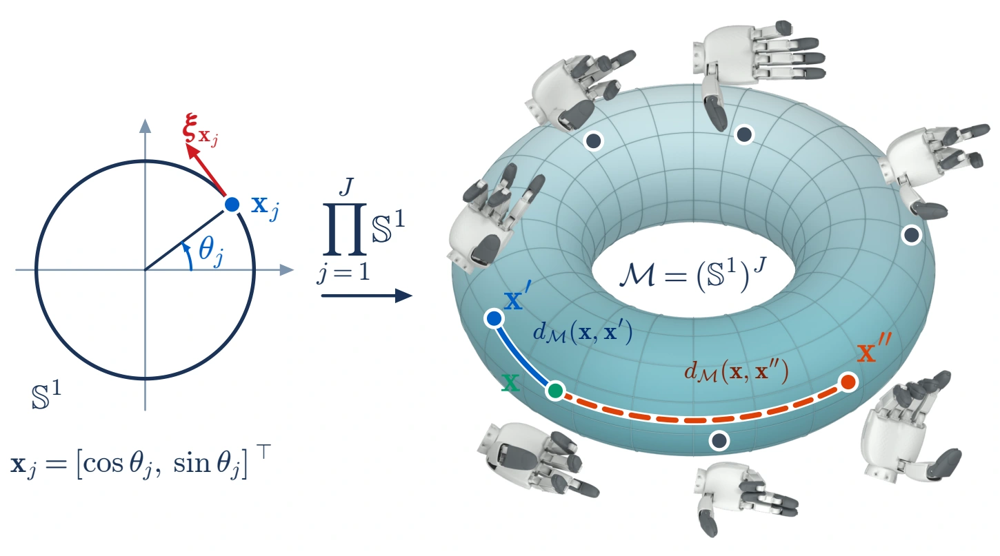
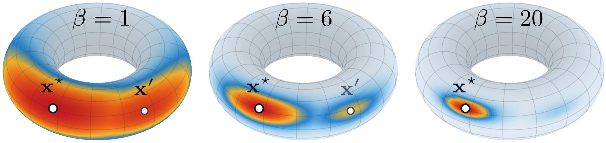
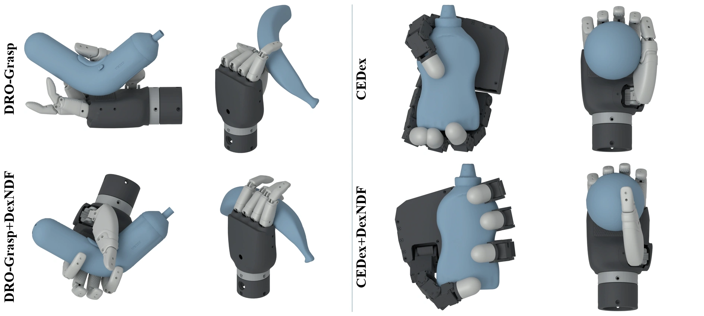
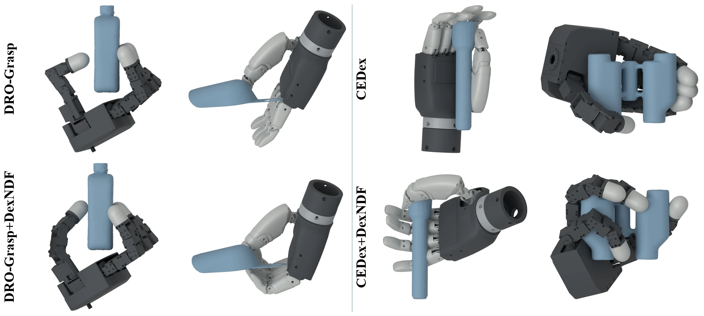

DexNDF: Object-Aware Geometric Dexterous Hand Priors
Imperial College London

Abstract
Learning dexterous manipulation priors requires modeling object-dependent robot-hand configuration spaces from sparse demonstrations. We introduce DexNDF, a cross-embodiment, object-aware geometric neural distance field. We represent revolute joints on a product of circles via our TorusHand. Through embodiment-specific embeddings, object-aware grasp pooling, and negative sampling, we learn a shared conditional field, which is formulated as an energy-based model, that connects distance-field gradients to the Riemannian score, yielding a score direction supervision alongside distance regression. Our novel stochastic tempered geodesic projection unifies denoising and sampling. To zero-shot generalize to unseen hands, we train only a lightweight adapter using kinematic correspondences, requiring no target-hand interaction data. Over six training embodiments and one unseen hand, we demonstrate improved denoising and manipulation performance across pose denoising, pose generation, dexterous grasping, RL-based imitation learning, and model predictive control.
Method overview
TorusHand
We represent each finger joint angle as a point on a circle. Together, these circles form a torus, where each point represents a dexterous hand pose. Given an object’s geometry, DexNDF estimates how far that pose is from a plausible configuration for grasping the object.


Adaptive Tempered Geodesic Projection (ATGP)
Adaptive Tempered Geodesic Projection (ATGP) unifies pose denoising and grasp generation. Each step moves the fingers toward a plausible grasp using a step size that scales with the predicted distance. The inverse temperature β controls how much the size can vary. High β keeps the updates focused on refining a noisy pose, while lower β lets the same method explore more diverse ways to interact with the same object.


Novel Training Scheme
To learn from sparse robot manipulation data, we use 3D object geometry to pool reference grasps from similarly shaped objects and exclude those objects when selecting negative examples. We also align pose representations across hands so the field can generalize to unseen hand embodiments.
Applications
Dexterous Pose Generation
Show more videos
Dexterous Pose Denoising
Show more videos
Dexterous Grasping


Show More Results


Citation
@unpublished{liu2026dexndf,
author = {Liu, Zuhao and Birdal, Tolga},
title = {{DexNDF}: Object-Aware Geometric Dexterous Hand Priors},
year = {2026},
note = {Manuscript}
}